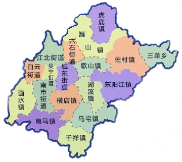

东阳市
东阳，浙江省辖县级市，由金华市代管，地处浙江省中部，会稽山、大盘山、仙霞岭延伸入境，形成三山夹两盆、两盆涵两江的地貌，地势东高西低， 属亚热带季风气候区。全市辖有6个街道、11个镇和1个乡，市域总面积1747平方公里。 根据第七次人口普查数据，截至2020年11月1日零时，东阳常住人口为108.7950万人。2020年，东阳市实现地区生产总值638.16亿元。
东阳历史悠久，公元195年（东汉献帝兴平二年）建县制，迄今已有1800多年历史。素有“婺之望县”、“歌山画水”之美称。 地理以“三山夹两盆、两盆涵两江”独特形貌著称；文教化育悠远，被誉为著名的教育之乡、建筑之乡、工艺美术之乡、恐龙之乡。 近年因科考发现恐龙蛋，又有“中国恐龙之乡”之称。属长江三角洲经济区域，是国务院批准的对外开放城市和浙江中部的历史文化名城。 东阳人文荟萃，英才辈出，孕育了北伐名将金佛庄、抗日名将朱福星、新闻先驱邵飘萍、科学泰斗严济慈、植物学家蔡希陶等一大批仁人志士。
东阳自古以来就有“兴学重教、勤耕苦读”的传统，朱熹、吕祖谦、陆游等曾到东阳“石洞书院”讲学传道。 东阳古民居建筑以东阳木雕为主，融竹编、石雕、砖雕、堆雕等装饰艺术为一体，形成了独具儒家文化特色的民居建筑体系， 截至2018年底，有国家5A级旅游景区1家、4A级4家、3A级1家。 东阳市隶属于浙江金华，是著名的建筑之乡、工艺美术之乡。国内最知名的横店影视城便坐落于此。
同时，东阳还是一座很少人知的美食小城。由于土地面积广阔，汇聚了十里八乡的美食与特产，一日三餐吃的就是美味佳肴。 本网站统计收录了相关的材料。